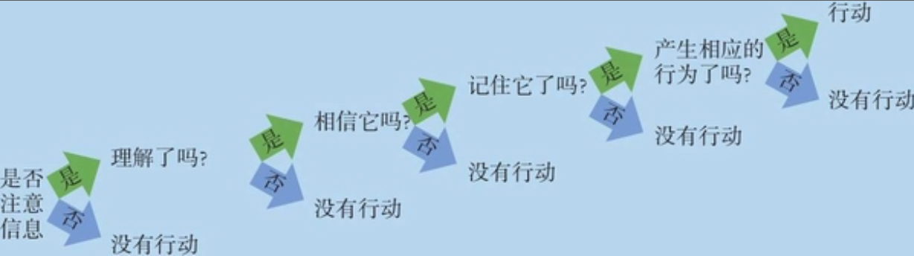

说服¶
如果我们相信说服的内容，则称为“教育”，不相信则称为“蛊惑”。
说服的路径¶

-
中心路径
当人们积极主动，并且能全面系统地思考问题时，就可能接受中心路径的说服，也就是关注论据。如果论据有力且令人信服，就很可能说服他人。如果论据苍白无力，思维缜密的人会很快注意到这一点并且进行反驳。
-
外周路径
如果我们接受信息时心不在焉，感觉与己无关或者太过忙碌，没时间仔细推敲该信息的意义。此时我们会接受外周路径的说服，关注那些能令人不假思索就接受的外部线索，而不会注意论据是否令人信服。
当人们心不在焉或没有积极主动地思考信息时，熟悉易懂的表述比新异的表述更具有说服力。（用感觉，不用逻辑）
中心路径的说服思考更深刻，因此更加持久，也更有可能改变行为。
说服的要素¶
-
说服者
- 可信度
- 专业性：说服之前赞同对方的观点，这样会让你看上去很睿智；说服时显得信心十足也能增加可信度
- 信赖性：如果接受方认为传达方并没有努力说服自己的企图，传达方的信赖度会很高；我们认为站在自身利益对立面的人是真诚的
- 吸引力和喜好
-
说服内容
- 理智与情感：有良好教育背景或者善于分析思辨的人更容易接受理性的说服。
- 好心情效应：如果你的认证薄弱，最好先给说服对象创造一种轻松愉快的气氛，希望他们对你的信息产生好感，而不仔细思索。
- 唤起恐惧效应：人们的恐惧程度越高，说服效果越好。但当恐惧和令人愉悦的行为有关时，其结果通常不会引发行为的改变，而是否认这一事实。只有在让人们意识到威胁的严重性和可能性，又告诉他们解决之道时，才更有说服力。
- 观点差异：如果信息来源非常可靠、不容忽视，那么与说服对象的立场差别很大的论点能最大限度地改变他人的观点。差异大小的影响取决于说服者是否可信。
- 正面说服和正反说服：对已经持赞成态度的人来说，正面说服更有效；对最初持反对意见的人来说，认可并反驳反面观点的说服更有效，如果人们了解反面观点，正反面的论证更有说服力，效果更持久。
- 首因对近因：如果两种信息接连出现，首先出现的信息最有利；如果两种信息时间上是分离的，要求听众在听完第二种信息后立即判断的话，第二种信息最有利。
-
说服渠道
随着问题熟悉性和重要性的增加，被动说服的效果会降低。
面对对的交流通常是最有效的。
对于复杂难懂的信息，书面文字的媒介更为有效。
当问题无关紧要或情境比较陌生，大众传媒则较为有效。
媒体形式越贴近生活，其传递的信息就越有说服力。
-
说服对象
低自尊的个体理解信息的速度通常较慢，因此难以说服；高自尊的人虽然能理解信息，但因自信满满而坚持己见；中等自尊水平的人最容易说服。
-
年龄：老年人的态度与其年轻时基本没什么两样，但与当今年轻人的态度不同
-
慎思：中心路径说服的关键不在于信息本身，而在于能否激发说服对象积极地思考。
预先知道有人试图说服你，很容易激起反驳之心。
分心会减少反驳
激发思考可以使有说服力的信息更具说服力，并且使无说服力的信息更令人怀疑。
有效的说服者不仅应该注意自己的形象以及所传达的信息，还应该注重说服对象可能会出现的反应。
-
现实中的说服：邪教的洗脑方法¶
- 魅力超凡的领导者，可以吸引和支配追随者。
- 容易轻信他人的说服对象。
- 生动、感性的信息以及群体给那些孤独和忧郁的人所带来的温暖和包容。
- 年轻的说服对象，态度和价值观都还不十分稳定，或者生活中遇到困境的人
- 利用群体效应，让成员与先前的社会支持系统割裂开
- 一系列的仪式以及学习经历
抵制说服的方法¶
-
预先公布自己的立场，会导致个体抵制随后的劝说。
-
温和地攻击对方的立场可以起到免疫的作用，使人对自己所持的观点深信不疑。
当有人攻击我们的观点时，我们通常会感到愤怒，并且盘算着如何反驳。反驳有利于人们抵制说服。驳倒某人的说服，并且得知自己成功地做到了这一点，你会产生较高的自我肯定感。
使用“有毒式寄生”式反驳，即把“强有力的反驳”和“受众看到对手观点的广告时在脑中呈现用来提取观点的线索”结合起来。如果受众看到了附在熟悉的广告上的反驳信息，他们就很难被这个广告说服。
如果某种攻击受到反驳的话，它很可能会更加坚定，而不是动摇人们的立场。
做一个积极的倾听者和批判性的思考者。与别人一起讨论自己看到的观点。如果该观点经不起仔细推敲，那么它就是再糟糕也不过如此。如果它经得起推敲的话，它对你的影响可能会更为持久。